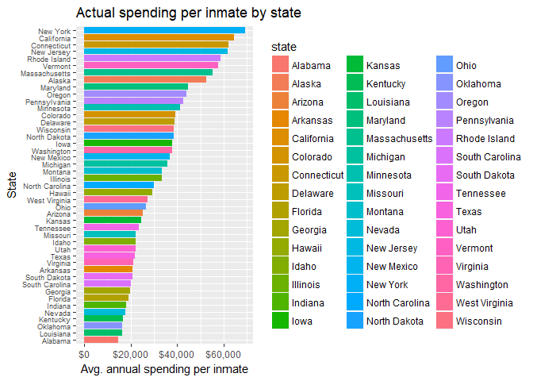

Data analysis: Overcrowding in US State Prisons
So just how overcrowded are US prisons?
These data were taken from the Bureau of Justice Statistics website, which has lots of interesting data about crime in America.
This dataset was called “Prisoners in 2015” on the Bureau of Justice Statistics website
Just so we are all on the same page here, the BJS measures “capacity” in three ways: the operational capacity, which is the “Number of inmates that “can be accommodated based on a facility’s staff, existing programs and services,” and the rated capacity, which is a rating given by officials, and finally design capacity, which is, “how many inmates architects/planners originally intended for facilities.”
In short, each of these numbers will be slightly different, so how one defines “capacity” will lead to different conclusions. For example, a prison might be 110% overcapacity if we use the operational capacity, but only 95% capacity if we use the rated capacity.
In order to come up with a balanced estimate of overcrowdedness, we will average the two measures of overcapacity.
Let’s read in the data and clean it up.
This dataset was particularly annoying to deal with because for some reason the … weren’t being dealt with correctly until manually copy and pasted the values using double quotes.
library(tidyverse)
library(stringr)
#the original files used ... and / to denote NAs
df <- read.csv('prison.csv', skip= 12, stringsAsFactors = FALSE, na.strings = c("…", '/'))
#check out the data
head(df,5)
## Jurisdiction Rated Operational Design Custody.population
## 1 Federal/b 134,461 <NA> <NA> 160,946
## 2 Alabama/c <NA> 25,763 13,318 24,814
## 3 Alaska/d <NA> 5,352 <NA> 5,247
## 4 Arizona 37,238 43,747 37,238 35,733
## 5 Arkansas 16,194 16,233 15,382 15,784
## Lowest.capacity.a X Highest.capacity.a X.1
## 1 119.7 % 119.7 %
## 2 186.3 96.3
## 3 98.0 98.0
## 4 96.0 81.7
## 5 102.6 97.2
#remove extra columns
df <- df[1:51,-c(7,9)]
#Convert NAs to 0
df[is.na(df)] <- 0
#We are going to join our dataframe to this one later
state_pop <- read.csv('statepop1.csv')
#Correct weird '/' values
bad <- df[which(str_detect(df$Jurisdiction, '[:punct:]')),]$Jurisdiction
#if have slash, then delete last three chars
df[which(str_detect(df$Jurisdiction, '[:punct:]')),]$Jurisdiction <- str_sub(bad, end = -3)
#this one manually do because had 3 chars after slash
df[which(df$Jurisdiction == 'Idaho/e'),]$Jurisdiction <- 'Idaho'
#replace commas in numbers
df[,2:ncol(df)] <- lapply(df[,2:ncol(df)], function(x) as.numeric(gsub(",", "", as.character(x))))
#make column names the same for joining
colnames(df)[1] <- 'state'
full_df <- left_join(df,state_pop, by='state')
#we'll use the total population of the USA for the federal population
full_df[1,'pop_est_2014'] <- 325000000
#instead of high and low capacity percentages, we'll average both to get one statistic
avgcap <- full_df %>%
group_by(state)%>%
mutate(avg_cap = mean(c(Lowest.capacity.a, Highest.capacity.a)))
#apply to new column
full_df$avg_cap <- avgcap$avg_cap
Now, our population stats are a little bit off because those numbers include children over the age of 18. In order to be fair, we will estimate the number of state residents over the age of 18. According to Google, in the USA about 76% of the population is older than 18. So we will reduce the population for each state by 24%.
full_df <- full_df %>%
mutate(pop_est_2014 = pop_est_2014*.76)
#Now compute the % of prison age population in prison
full_df <- full_df %>%
mutate(pop_prison_perc = Custody.population/pop_est_2014*100)
Now let’s look at the top 10 states with highest % of residents in state prison
full_df %>%
group_by(state)%>%
arrange(desc(pop_prison_perc))%>%
head()%>%
ggplot(aes(reorder(state, pop_prison_perc), pop_prison_perc, fill=state))+
geom_col()+
scale_y_continuous(breaks = seq(from=0, to=1, by=.1))+
labs(title='States with highest % in state prisons', x='states')
So Alaska and Delaware both have nearly 1% of their populations in state prisons. Keep in mind this is NOT counting those in jail. The real numbers are probably much bigger when jails are included.
What about which state has the highest average capacity?
full_df %>%
arrange(desc(avg_cap))%>%
head(10)%>%
ggplot(aes(reorder(state, avg_cap), avg_cap, fill=state))+
geom_col()+
labs(title='Top 10 states with most overcapacity prisons', x='State')+
geom_hline(yintercept=100, color='red', linetype='dotted', size=2)+
coord_flip()
We see Illinois clearly out in the lead with the most overcrowded prisons. Anyone know why it’s particularly bad there?
This article suggests it’s due to problems with Illinois’ sentencing laws.
What about which states have the LEAST full prisons?
full_df %>%
filter(!state %in% c('Nevada', 'Connecticut'))%>% #Nevada and Connecticut state data were missing!
arrange(avg_cap)%>%
head(10)%>%
ggplot(aes(reorder(state, avg_cap), avg_cap, fill=state))+
geom_col()+
labs(title='Top 10 states with least overcapacity prisons', x='State', y='Capacity')+
geom_hline(yintercept=100, color='red', linetype='dotted', size=2)+
coord_flip()
New Mexico and Mississippi seem to have the least overcrowded prisons. Nevertheless, there are reports like these that suggest the NM prison population is increasing fast. Keep in mind these were 2015 numbers.
It’s often mentioned that the cost of housing/feeding/medical care for inmates is high. Let’s estimate the cost for each state.
Google tells me that the average annual cost per inmate is about $31,100. That works out to about $84 per day. Most of the hotels I stay in cost less than that. Some states, such as NY, pay as much as $60,000 a year to take care of state prison inmates.
full_df <- full_df %>%
mutate(yr_costs = Custody.population*31000)
full_df %>%
filter(state != 'Federal')%>%
arrange(desc(yr_costs))%>%
head(20)%>%
ggplot(aes(reorder(state, yr_costs), yr_costs, fill=state))+
geom_col()+
scale_y_continuous(labels = scales::dollar_format())+
labs(title='Top 20 states with most spending on inmates', x='State', y='Est. Spending $')+
coord_flip()

Interesting that Texas likely spends more than California, considering CA has over 10,000,000 more residents than Texas. Also, California’s population is nearly double Florida’s and yet Florida probably spends nearly as much as California does. These estimates tell me Florida and Texas need to be thinking about reforms: their prison systems are definitely not efficient.
Finally, is there any connection between spending and being overcapcity? We would expect that more spending is correlated to less overcrowding, right?
full_df %>%
filter(!state == 'Federal')%>%
ggplot(aes(yr_costs, avg_cap, size=pop_est_2014, color=state))+
geom_point()+
scale_x_continuous(labels = scales::dollar_format())+
geom_text(aes(label = state), vjust = -1)+
theme(legend.position = "none")+
stat_smooth(method='lm',color='black', se=FALSE)+
labs(title='Is there a relationship between spending and overcrowding?')

full_df %>%
filter(!state == 'Federal')%>%
ggplot(aes(avg_cap, pop_est_2014, size= pop_est_2014,color=state))+
geom_point()+
geom_text(aes(label = state), vjust = 2)+
theme(legend.position = "none")+
stat_smooth(method='lm',color='black', se=FALSE)+
labs(title='Is there a relationship between population and overcrowding?')

Counter-intuitively, there is a slight relationship between greater state spending and overcrowdedness. This suggests the way states are spending their taxpayer money on prisons is not working. We would hope to see a decrease in overcrowdedness as states paid money to build new facilities, but that doesn’t seem to be the case. Perhaps only a small fraction of the tax money goes into new facilities? Maybe most of it goes towards pension plans for guards and more security features, who knows. Someone with some domain knowledge here might be able to explain why this is the case.
Overall, there does seem to be a relationship, albeit relatively weak, between a state’s population and the overcrowdedness. This makes sense. If states all had the same area, then those states with the bigger populations would likely be more crowded.
Summary
I was surprised to find that Illinois leads the country in overcrowded prisons and that Alaska and Delaware keep the highest percentage of citizens in state prisons. I think this analysis paints a rosier picture than expected for California’s state prisons. At the same time, it is worrying to see Florida and Texas spending nearly as much as California on its prisons given that their populations are much smaller.